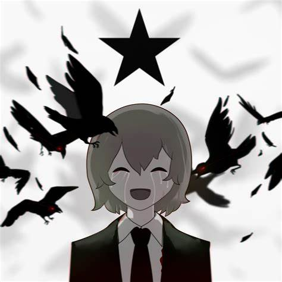

My first para.
This is a linkI am red as emphasis!
Cyan is even better for highlighting in the dark mode!
I cannot write poems till a day I learned How to use Enter
WHAT'S BOTHERSOME IS I TO USE PRE
I was lost and was afraid，
I believed all of their lies，
I believed that I was safe，
And that I would never die，
Now I'm all alone，
I've been hiding in the dark，
I just want to go home，
But my deeds sent me too far，
I never did go near，
'Cuz I know just what I saw，
Yet on a day of joy，
My life ended to their flaws!
Now I'm all alone，
Fighting monsters in the dark，
I wish that I could live，
But I fear I've gone too far!
All stay strong, we live eternally!
All is well in the Afton family!
Lives, they fell to pure insanity!
All is hell in the Afton family!
I often do pretend，
Can't you see I'm broken down?
I wish this were the end，
But continue on I vow，
Now I'm all alone，
I'm still hiding in the dark，
As saddened souls we roam，
We can only go so far!
Always begging, please，
Yet the outcome I would dread，
I've fallen to my knees，
Let my pride get to my head，
Now I'm all alone，
Hearing whispers in the dark，
I wander through the past，
Seeing memories afar，
All stay strong, we live eternally!
All is well in the Afton family!
Lives, they fell to pure insanity!
All is hell in the Afton family!
MAYA VODOPIANOVA

Это не имеет смысла!
Это не имеет смысла!!
Это не имеет смысла!!!
Всё пройдет…
Не мой дом этот мир,yнеси меня с собой!
MiatriSs is a musical and drawing artist. She also has a musical corporation called "RadioBunny Inc." She writtes original songs, and makes some fan songs/remixes for stuff such as Five Nights and Freddy's, Bendy and the Ink Machine, My Little Pony, Steins;Gate, Helltaker and more!
The real name of MiatriSs is:Maya Vodopianova
,and in the head leaders of each MV showsMS
To contact MiatriSs,you can not only visit her VK Home,but also go to:
RadioBunny Inc.,